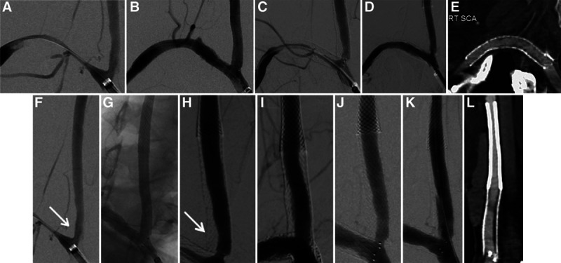
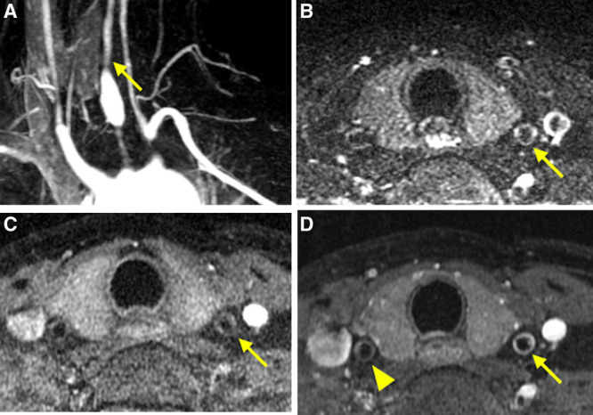
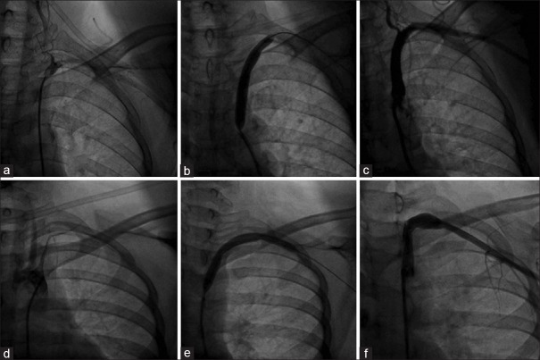
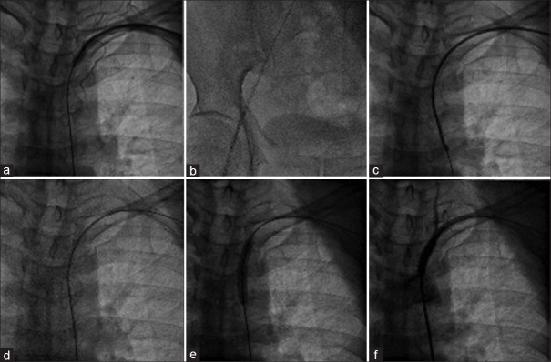
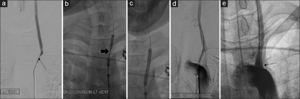
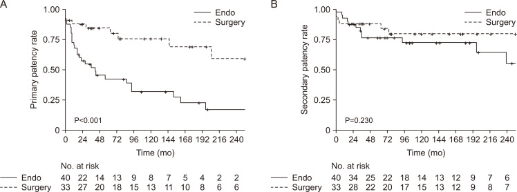

931 — Takayasu: nong/stent & phẫu thuật bắc cầu — chọn bệnh nhân, chọn kỹ thuật, theo dõi tái hẹp
Tags: pattern:hep-mach-dai-doan vung:thanh-mach-lon score:Numano protocol:HR-VWI protocol:CTA-MRA protocol:theo-doi-sau-can-thiep
Mức chắc chắn (certainty): tổng hợp y văn (literature synthesis) — ghép cohort 73 lần tái thông ở 56/545 bệnh nhân TAK (Vasc Specialist Int 2024, CC BY-NC 4.0), series can thiệp nhánh trên cung có HR-VWI (J Chin Med Assoc 2021, CC BY-NC-ND 4.0), kỹ thuật nong/stent dưới đòn (Heart Views 2019, CC BY-NC-SA 4.0) và ca mắt (Taiwan J Ophthalmol 2022, CC BY-NC-SA 4.0). Số liệu là nguyên văn từng bài, không trộn ước lượng.
1. Tổng quan — vì sao can thiệp trong Takayasu khác mọi bệnh hẹp mạch khác
- Takayasu (TAK) là viêm mạch lớn mạn tính ở nữ trẻ, tổn thương hẹp/tắc dài đoạn hoặc phình ĐMC và các nhánh (xem bài 436 để chẩn đoán – phân loại Numano). Can thiệp chỉ đặt ra khi hẹp gây triệu chứng và thất bại/không dung nạp điều trị nội khoa: trong cohort Hàn Quốc, lý do can thiệp hay gặp nhất là tăng huyết áp không kiểm soát (49,3–64,3%) và đau cách hồi chi (39,7%).
- Khác biệt cốt lõi so với xơ vữa: thành mạch đang viêm thì tăng sinh nội mạc tái phát nhanh sau nong → tái hẹp sớm. Vì vậy câu hỏi đầu tiên không phải "nong bằng bóng hay đặt stent" mà là "bệnh còn hoạt tính không?" — và đó là lý do HR-VWI (high-resolution vessel wall imaging) trở thành bước chọn bệnh nhân.
- Cơ chế hình ảnh (TẠI SAO):
- Viêm hoạt tính: phù thành mạch (T2/STIR sáng) + ngấm gadolinium đồng tâm trên HR-VWI; FDG-PET ngấm dọc thành. Can thiệp vào đoạn này → tái hẹp/tắc sớm.
- Giai đoạn xơ (fibrotic/burnt-out): thành dày, tăng tín hiệu T1, không ngấm, canxi hóa lấm tấm; nội khoa ít hiệu quả ở giai đoạn này → đây là "cửa sổ" để can thiệp.
- Sau nong/stent: tăng sinh nội mạc trong stent (in-stent restenosis) là cơ chế tái hẹp chủ yếu, khác huyết khối — nên đọc CTA/HR-VWI, không chỉ đo lòng mạch trên MRA.
- Ngưỡng định lượng phải nhớ:
- Tái hẹp (restenosis) = hẹp ≥ 50% đường kính lòng mạch đích; tái tắc (re-occlusion) = mất dòng chảy đoạn đã can thiệp; thất bại kỹ thuật = còn hẹp ≥ 50% ngay sau thủ thuật (định nghĩa dùng trong cohort 73 lần tái thông).
- Thông suốt tiên phát (primary patency) sau nội mạch: 42,2% / 31,7% / 17,0% ở 5 / 10 / 20 năm; sau phẫu thuật: 84,4% / 75,7% / 59,0% (p < 0,001) — khác biệt rất lớn và có ý nghĩa.
- Thông suốt thứ phát (secondary patency) khác biệt KHÔNG có ý nghĩa giữa hai nhóm → tái hẹp sau nội mạch cứu được bằng can thiệp lặp, đây là lý do nội mạch vẫn hợp lý ở bệnh nhân chọn lọc.
- Tái hẹp tập trung trong 3 năm đầu sau nội mạch → tăng nhịp theo dõi trong 3 năm đầu là khuyến cáo trực tiếp từ cohort.
- Series nhánh trên cung có HR-VWI: 6 bệnh nhân, 22 động mạch, thành công kỹ thuật 100%, không biến chứng thần kinh, theo dõi trung bình 56,3 ± 41,1 tháng, tái hẹp 12/22 (54,5%) — con số nhắc rằng thủ thuật an toàn nhưng tuổi thọ stent ngắn.
- Series dưới đòn (kỹ thuật antegrade/retrograde): thành công cấp 100%, không biến chứng đáng kể, tái hẹp 18,2% ở theo dõi 22,5 tháng — trong đó có 1 ca Takayasu, gợi ý bệnh nền quyết định tái hẹp chứ không phải kỹ thuật.
2. Mẫu hình + chọn can thiệp theo vị trí (gamut)
- Nhánh trên cung (dưới đòn, cảnh, thân cánh tay đầu): hẹp ngắn, lỗ vào (ostial) → nội mạch; biểu hiện đau cách hồi chi trên, hội chứng ăn cắp dưới đòn, thiếu máu não, giảm thị lực. Đây là nhóm thuận lợi nhất cho nong/stent.
- Động mạch thận: hẹp lỗ vào → tăng huyết áp kháng trị ở người trẻ; nội mạch mang lại giảm huyết áp, nhưng thận là vị trí tái thông hay gặp nhất (31,5%) và tái hẹp đòi hỏi can thiệp lặp.
- ĐMC bụng/ngực: tổn thương lan tỏa, nhiều tầng, kèm phình → phẫu thuật bắc cầu là lựa chọn ưu tiên (nhóm mổ chiếm 45,2% các lần tái thông, dành cho bệnh lan tỏa/phức tạp).
- Động mạch vành – mạch phổi: tổn thương lỗ vào (ostial) đặc trưng của viêm mạch; can thiệp được nhưng nguy cơ tái hẹp cao, cần phối hợp ức chế miễn dịch.
- Ngoại lệ không can thiệp: hẹp không triệu chứng, hẹp đã có tuần hoàn bàng hệ tốt, hoặc đang trong đợt viêm hoạt tính chưa kiểm soát → điều trị nội khoa trước, chụp lại sau 3–6 tháng.
3. Bảng so sánh phân biệt (ma trận đối chiếu)
| Thực thể (entity) | Hình ảnh điển hình | Chốt vào (rule-in) | Chốt loại (rule-out) | Gợi ý xác nhận |
|---|---|---|---|---|
| Nong bóng đơn thuần (PTA) | Lòng mạch mở sau bóng, có thể còn hẹp tồn dư, không có vật liệu trong lòng | Hẹp ngắn, lỗ vào, mạch thẳng, không canxi hóa nặng | Co hồi đàn hồi (recoil) ngay sau nong → cần stent | Chụp kiểm tra ngay; đo hẹp tồn dư (%) |
| Stent (BMS) | Khung kim loại gây nhiễu (blooming) trên CTA/MRA, lòng mạch đều | Hẹp tồn dư ≥ 30% hoặc recoil sau nong, tổn thương lỗ vào | Nhiễu kim loại che mất lòng mạch → không đọc được, cần HR-VWI/CTA lát mỏng | CTA + HR-VWI; siêu âm Doppler đo PSV |
| Bóng phủ thuốc (DEB/DCB) | Không để lại vật liệu; lòng mạch mở, không nhiễu | Tái hẹp trong stent (in-stent restenosis), tổn thương ngắn | Tổn thương dài/lan tỏa → DEB không đủ | Chụp mạch kiểm tra 6–12 tháng |
| Bắc cầu (bypass) | Cầu mạch ngoài ổ tổn thương, có thể qua cổ/ngực; trên CTA thấy đoạn mạch ghép | Tổn thương lan tỏa/nhiều tầng, thất bại nội mạch, phình | Bệnh còn hoạt tính chưa kiểm soát → hoãn mổ | CTA sau mổ; kiểm tra miệng nối + đoạn ghép |
| Xơ vữa (atherosclerosis) | Canxi hóa lấm tấm, mảng lệch tâm ở ngã ba, thành không dày đồng tâm | Yếu tố nguy cơ tim mạch + canxi hóa + tuổi lớn | Nữ trẻ + dày thành đồng tâm + tổn thương lỗ vào nhiều nhánh → TAK | Đối chiếu HR-VWI/PET, CRP/ESR |
Chọn kỹ thuật theo hình thái tổn thương:
| Hình thái tổn thương | Ưu tiên | Lý do |
|---|---|---|
| Hẹp ngắn < 3 cm, lỗ vào, một nhánh | Nong bóng ± stent | Ít xâm lấn, bảo tồn nhánh, tái can thiệp được |
| Hẹp dài, lan tỏa, nhiều tầng | Bắc cầu (bypass) | Nội mạch thất bại cao vì đoạn lành quá ngắn để neo stent |
| Tái hẹp trong stent | Nong bóng phủ thuốc (DEB/DCB), cân nhắc stent mới | DEB được báo cáo hứa hẹn cho tái hẹp kháng trị trong stent |
| Phình/giả phình sau nong | Stent phủ (covered stent) hoặc mổ | Kiểm soát biến chứng thủng/giả phình |

Hai vị trí can thiệp ở cùng bệnh nhân: động mạch dưới đòn phải (A–E) và động mạch cảnh chung phải (F–L) — chụp mạch trước, nong bóng, và kết quả sau đặt stent. Nguồn: Chen ST et al., J Chin Med Assoc 2021 (PMC12966148) Fig. 2, CC BY-NC-ND 4.0 — nguyên bản, không ghép.Ba câu hỏi trước khi can thiệp (thứ tự không được đảo)
- Có triệu chứng do hẹp không? (đau cách hồi, thiếu máu não, THA kháng trị, thiếu máu cơ tim) — hẹp không triệu chứng không phải chỉ định.
- Bệnh còn hoạt tính không? — HR-VWI (dày thành đồng tâm + ngấm = viêm cấp) + CRP/ESR + PET. Còn hoạt tính → điều trị miễn dịch trước 3–6 tháng, chụp lại.
- Tổn thương ngắn/lỗ vào hay lan tỏa? — ngắn/lỗ vào → nội mạch; lan tỏa/nhiều tầng → bắc cầu.

HR-VWI ở nữ 36 tuổi TAK giai đoạn viêm cấp: MRA 3D cho thấy hẹp khít, còn các lát HR-VWI cho thấy dày thành đồng tâm + ngấm thuốc — dấu chống chỉ định tương đối can thiệp ngay. Nguồn: Chen ST et al. (PMC12966148) Fig. 1, CC BY-NC-ND 4.0 — nguyên bản, không ghép.4. Protocol chụp, theo dõi & hệ phân tầng
Trước can thiệp (bắt buộc):
- HR-VWI 3T (hoặc 1,5T có chuỗi thành mạch): T1 trước/sau gadolinium + T2/STIR thành mạch ĐMC và toàn bộ nhánh dự kiến can thiệp; đọc dày thành đồng tâm và mức ngấm (so với cơ/gan).
- CTA (ĐMC + nhánh) lát ≤ 1 mm hoặc MRA để đo đường kính lòng mạch, chiều dài đoạn hẹp (mm/cm), phân loại Numano.
- CRP/ESR + FDG-PET/CT khi HR-VWI không kết luận; chức năng thận (eGFR) trước khi dùng cản quang, đo HA hai tay (chênh ≥ 20 mmHg là dấu theo dõi).
Thủ thuật (khung kỹ thuật):
- Đường vào: bẹn ± cánh tay; tổn thương dưới đòn tắc hoàn toàn có thể cần tiếp cận ngược dòng (retrograde) + snare tạo vòng động–động để đặt stent từ trên xuống (kỹ thuật báo cáo ở Heart Views 2019).
- Vật liệu: nong bóng trước, stent khi recoil/hẹp tồn dư; bóng phủ thuốc cho tái hẹp trong stent; stent phủ khi có nguy cơ thủng/giả phình.
- Sau thủ thuật: không ngừng ức chế miễn dịch; kháng kết tập theo bác sĩ; kiểm tra mạch ngoại vi + HA.

Trình tự một thì: (a) tổn thương dưới đòn trái, (b) đặt stent, (c) kết quả cuối; hàng dưới là ca Takayasu — (d) tổn thương, (e) nong bóng, tiến tới đặt stent. Nguồn: Krishnappa S et al., Heart Views 2019 (PMC6791090) Fig. 1, CC BY-NC-SA 4.0.
Tái hẹp sau can thiệp: (a) qua chỗ hẹp, (b) snare tạo vòng động–động, (c) đưa catheter qua tổn thương, (d) nong bóng lại — minh họa "tái hẹp cứu được bằng can thiệp lặp". Nguồn: Krishnappa S et al. (PMC6791090) Fig. 5, CC BY-NC-SA 4.0.Lịch theo dõi sau can thiệp (dựa trên nguy cơ tái hẹp 3 năm đầu):
| Thời điểm | Việc làm | Ngưỡng hành động |
|---|---|---|
| Ngay sau thủ thuật | Chụp kiểm tra + đo hẹp tồn dư | Hẹp tồn dư ≥ 50% = thất bại kỹ thuật |
| 3 tháng | CTA/HR-VWI + siêu âm Doppler | Tái hẹp ≥ 50% → xem lại kế hoạch |
| 6 tháng | CTA/MRA | Như trên |
| 12 tháng | CTA/MRA + CRP/ESR | Tái hẹp trong stent → cân nhắc DEB |
| Hằng năm (suốt đời) | CTA/MRA + HR-VWI khi nghi hoạt tính | Tái hẹp/tái tắc → can thiệp lặp hoặc bắc cầu |
flowchart TD
A[TAK + hep co trieu chung] --> B{Trieu chung do hep? dau cach hoi, TIA, THA khang tri}
B -->|Khong| C[Theo doi dinh ky + dieu tri noi khoa]
B -->|Co| D[Danh gia hoat tinh: CRP/ESR + HR-VWI + PET]
D -->|Dang viem: day thanh dong tam + ngam| E[Uc che mien dich 3-6 thang -> chup lai]
E --> D
D -->|Nguoi: khong ngam, thanh xo day| F{Hinh thai ton thuong}
F -->|Ngan, lo vao, 1 nhanh| G[Nong bong +- stent noi mach]
F -->|Lan toa, nhieu tang, phinh| H[Bac cau phau thuat]
G --> I[Theo doi 3-6-12 thang roi hang nam: tai hep >= 50%?]
H --> I
I -->|Tai hep trong stent| J[Bong phu thuoc DEB hoac can thiep lap]
I -->|Tai tac / that bai| K[Can nhac bac cau]
5. Biến thể bình thường và cạm bẫy
- Can thiệp khi viêm còn hoạt tính = tự chuốc tái hẹp: HR-VWI dày thành đồng tâm + ngấm là dấu trì hoãn — ca trong series JCMA chính vì thấy dấu này mà chọn bệnh nhân khác/hoãn, không nong ngay.
- Đọc "hẹp" mà bỏ "dày thành": trên CTA, thành dày 1–2 mm đồng tâm dễ bị coi là "bình thường"; hẹp dài đoạn không canxi hóa ở nữ trẻ phải đo độ dày thành (mm), không chỉ đo lòng.
- Nhiễu kim loại của stent: CTA/MRA có thể che lấp lòng mạch trong stent → không kết luận tắc stent trên một mặt cắt bị nhiễu; dùng HR-VWI/CTA lát mỏng + Doppler PSV.
- Tái hẹp ≠ thất bại điều trị: thông suốt thứ phát không khác biệt giữa nội mạch và mổ — tái hẹp cứu được; đừng vì một lần tái hẹp mà chuyển ngay sang mổ lớn.
- "Bóng nong xong là khỏi" — sai: 54,5% động mạch trong series nhánh trên cung tái hẹp; bệnh nhân cần theo dõi suốt đời, đặc biệt 3 năm đầu.
- Cạm bẫy mắt: hẹp dưới đòn/cảnh có thể biểu hiện mù một mắt, tân mạch mống mắt, đục thủy tinh thể (Takayasu retinopathy) — tái thông có thể cải thiện thị lực (báo cáo hiếm), nhưng mắt đã mù sâu thì không hồi phục; cần phối hợp bác sĩ mắt trước khi quyết định can thiệp.
- Hạ huyết áp sau nong thận: bệnh nhân đang dùng nhiều thuốc hạ áp dễ tụt HA sau tái thông → giảm liều trước thủ thuật, theo dõi 24–48 giờ.
6. Tự lượng giá — Blind Quiz
Ca 1 — Nữ 36 tuổi, TAK, đau cách hồi tay phải, chênh HA hai tay 30 mmHg. Trước can thiệp, HR-VWI:
- Hỏi: có nên nong/stent ngay không? Dấu nào quyết định? Nếu vẫn can thiệp thì hậu quả dự kiến?
Bấm để hiện đáp án (findings + chẩn đoán)
- Findings: MRA 3D hẹp khít nhánh trên cung; các lát HR-VWI cho dày thành đồng tâm + ngấm gadolinium = viêm đang hoạt tính.
- Chẩn đoán: TAK giai đoạn hoạt tính — chống chỉ định tương đối can thiệp ngay.
- Xử trí: ức chế miễn dịch 3–6 tháng, chụp lại HR-VWI; khi thành không còn ngấm mới nong/stent.
- Hậu quả nếu can thiệp sớm: tăng sinh nội mạc nhanh → tái hẹp sớm (series có 54,5% tái hẹp).
- Nguồn: Chen ST et al. (PMC12966148) Fig. 1, CC BY-NC-ND 4.0.
Ca 2 — Cùng bệnh nhân sau khi kiểm soát viêm: nong bóng dưới đòn rồi stent. Chụp mạch:
- Hỏi: mô tả các bước? Vì sao phải kiểm tra cả cảnh chung chứ không chỉ dưới đòn?
Bấm để hiện đáp án (findings + chẩn đoán)
- Findings: (A–E) nong bóng + stent động mạch dưới đòn phải; (F–L) nong bóng + stent động mạch cảnh chung phải — chụp trước, bóng, kết quả sau.
- Vì sao kiểm tra cảnh: TAK tổn thương nhiều nhánh cùng lúc; bỏ sót hẹp cảnh = nguy cơ thiếu máu não dù tay đã hết đau cách hồi.
- Theo dõi: CTA/HR-VWI 3–6–12 tháng, sau đó hằng năm; tái hẹp ≥ 50% là ngưỡng hành động.
- Nguồn: Chen ST et al. (PMC12966148) Fig. 2, CC BY-NC-ND 4.0.
Ca 3 — Nam 28 tuổi, hẹp khít dưới đòn trái tới lỗ động mạch sống, nong bóng rồi đặt stent:

- Hỏi: đọc chuỗi hình? Vì sao nong bóng đơn thuần không đủ ở lỗ vào? Điều gì chứng minh tái thông có lợi cho mắt?
Bấm để hiện đáp án (findings + chẩn đoán)
- Findings: (a) hẹp > 90% động mạch dưới đòn trái lan tới lỗ động mạch sống; (b–c) bóng nong, thắt eo (waist) khi bơm; (d) còn hẹp tồn dư ở lỗ vào; (e) stent mở rộng lỗ vào, dòng chảy tốt.
- Vì sao cần stent: tổn thương lỗ vào (ostial) có co hồi đàn hồi mạnh → nong bóng đơn thuần để lại hẹp tồn dư.
- Mắt: bệnh nhân 15 tuổi có Takayasu retinopathy (tân mạch mống mắt, đục thủy tinh thể một mắt); sau tái thông, dấu đáy mắt và thị lực cải thiện — báo cáo hiếm, nhấn mạnh tái thông mạch lớn có thể cứu mắt.
- Nguồn: Jain VK et al., Taiwan J Ophthalmol 2022 (PMC9262024) Fig. 2, CC BY-NC-SA 4.0.
Ca 4 — So sánh thông suốt 20 năm: đọc biểu đồ Kaplan–Meier của 73 lần tái thông:

- Hỏi: nhóm nào thông suốt tốt hơn? Chênh lệch ở 20 năm là bao nhiêu? Vì sao vẫn có thể chọn nội mạch?
Bấm để hiện đáp án (findings + chẩn đoán)
- Findings: thông suốt tiên phát sau nội mạch 42,2% / 31,7% / 17,0% ở 5/10/20 năm; sau mổ 84,4% / 75,7% / 59,0% (p < 0,001).
- Chênh lệch 20 năm: 59,0% − 17,0% = 42 điểm phần trăm nghiêng về phẫu thuật.
- Vẫn chọn nội mạch vì: thông suốt thứ phát không khác biệt (can thiệp lặp cứu được), ít xâm lấn, phù hợp tổn thương ngắn/lỗ vào, và bệnh nhân TAK thường cần nhiều lần can thiệp trong đời.
- Nguồn: Shin J et al., Vasc Specialist Int 2024 (PMC11697587) Fig. 2, CC BY-NC 4.0.
Bài liên quan chéo
- 436 – Takayasu vs GCA: chẩn đoán & phân loại (bước 1: ai là TAK, Numano, ACR/EULAR 2022)
- 438 – Theo dõi dài hạn GCA & biến chứng mạch lớn (đối chiếu theo dõi viêm mạch lớn)
- 910 – Dẫn lưu áp-xe/đường mật/thận qua da (nguyên tắc can thiệp dưới hướng dẫn hình ảnh)
- 930 – TACE/RFA gan (khung can thiệp nội mạch: chọn bệnh nhân, biến chứng)
- 840 – ĐMC: endoleak & bệnh động mạch ngoại biên (theo dõi stent graft — cùng nguyên lý "vật liệu trong lòng mạch")
Ảnh
931_takayasu-hr-vwi-hoat-tinh_MRI_PMC12966148-Fig1.jpg— Chen ST et al., J Chin Med Assoc 2021 (PMCID: PMC12966148) Fig. 1, CC BY-NC-ND 4.0 (nguyên bản).931_takayasu-ptas-canh-duoi-don_DSA_PMC12966148-Fig2.jpg— Chen ST et al. (PMC12966148) Fig. 2, CC BY-NC-ND 4.0 (nguyên bản).931_takayasu-nong-bong-stent-duoi-don_DSA_PMC6791090-Fig1.jpg— Krishnappa S et al., Heart Views 2019 (PMCID: PMC6791090) Fig. 1, CC BY-NC-SA 4.0.931_takayasu-hep-lai-sau-can-thiep_DSA_PMC6791090-Fig5.jpg— Krishnappa S et al. (PMC6791090) Fig. 5, CC BY-NC-SA 4.0.931_takayasu-thong-suat-sau-tai-thong_KM_PMC11697587-Fig2.jpg— Shin J et al., Vasc Specialist Int 2024 (PMCID: PMC11697587) Fig. 2, CC BY-NC 4.0.931_takayasu-hep-90-va-stent_DSA_PMC9262024-Fig2.jpg— Jain VK et al., Taiwan J Ophthalmol 2022 (PMCID: PMC9262024) Fig. 2, CC BY-NC-SA 4.0.- Chi tiết giấy phép từng ảnh trong
images/CREDITS.md. AuntMinnie/Radiopaedia: chỉ dẫn link, không tải.
Không dùng để chẩn đoán độc lập khi chưa có người hướng dẫn.